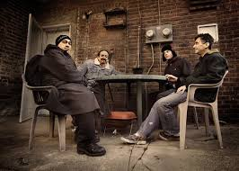
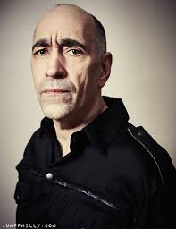
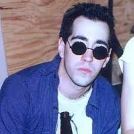
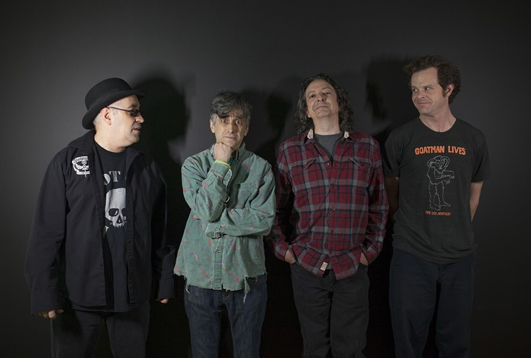
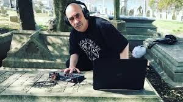
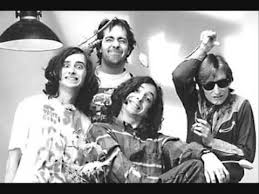
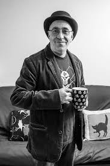

Rodney Anonymous







Philly Punk Rock Legend.
Rodney Linderman (born 21 May 1963[3][4]), also known by his stage name Rodney Anonymous (and such variations thereof as "Rodney Amadeus Anonymous," "Rodney Anonymous Mellencamp" and "H.P. Hovercraft" pseudonym, is an American musician, journalist, and humorist currently based in Philadelphia. He is best known as the lead vocalist, keyboardist and co-songwriter of the satirical punk rock band The Dead Milkmen.